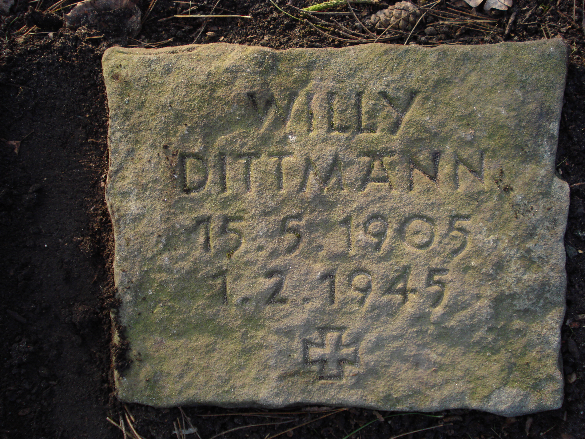
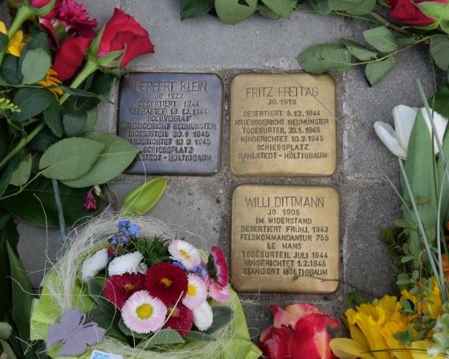
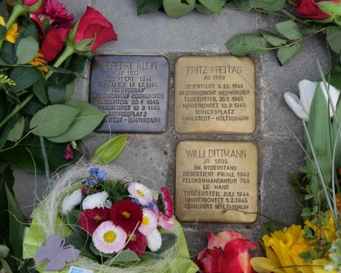
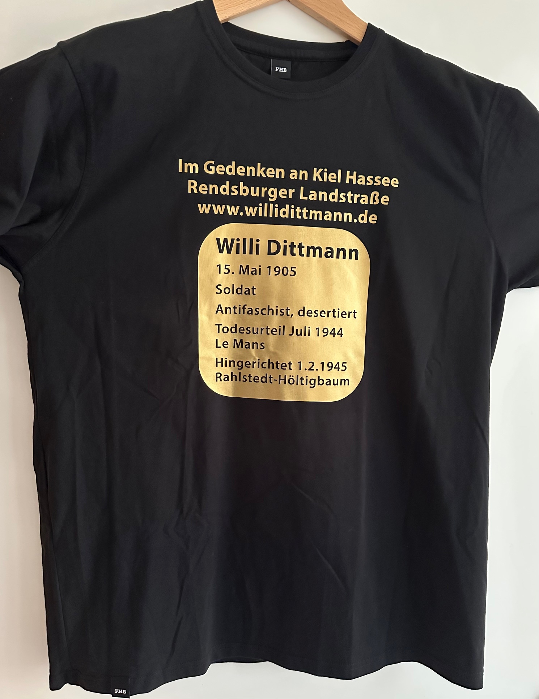
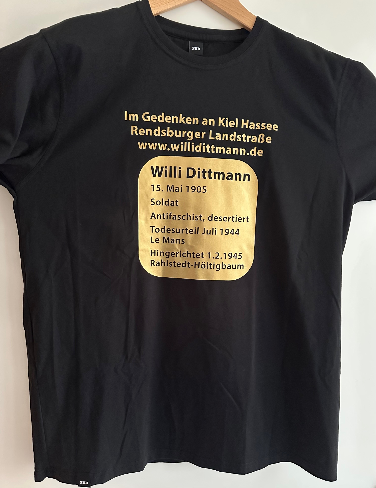
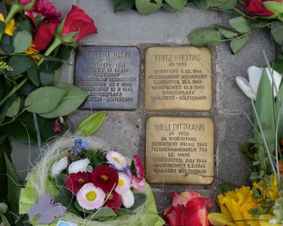
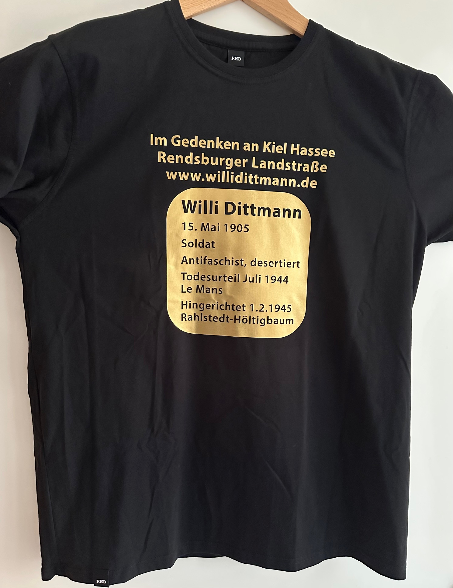

Bilder


 

 

Im Gedenken an Kiel Rendsburger Landstraße 143
15. Mai 1905 Soldat Anifaschist, desertiert Todesurteil Juli 1944, Le Mans Hingerichtet 1.2.1945, Rahlstedt-Höltigbaum
Siehe tauchjoerg.de

